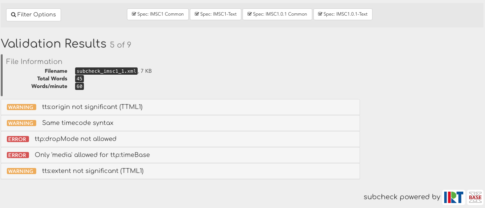
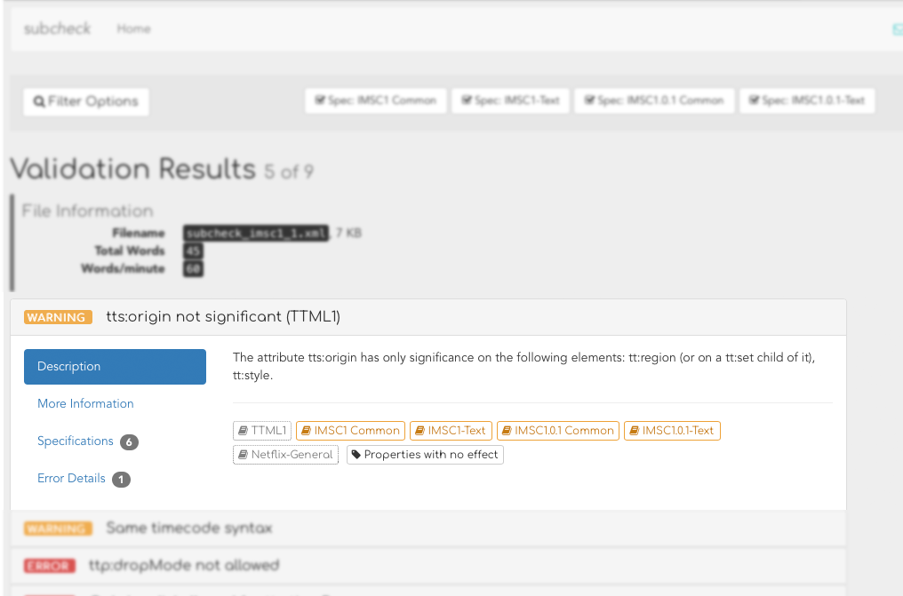

The report view allows the display of general metadata, such as word counts or other metrics, and allows users to gather insight into the validation results and filter them according to their needs.
This view is built completely on the report result — so all information displayed is also available to other engines or systems.
Figure 3. The Report View
|  |
Inside the Report View, users may click on the messages to display more in-depth information.
Figure 4. Filtering
|  |
Tabs Overview
The detail view starts with a general error description to add more technical
context for the user. When working with different profiles within the same standard,
subcheck allows adding Tags
to given rules that will be shown along with the general description, so users can
quickly assess whether this rule’s ErrorLevel is set differently
in other profiles.
In addition to technical information, this tab will provide more general or editorially useful information and hints on why that message appeared.
The Specifications tab points to the actual specifications this error violates. Usually entries contain a link that enables users to read the original specification for further information.
This tab contains an XPath-Expression that can be copied to any
capable editor or engine to pinpoint the exact error location. An HTML preview of the
error is also provided, so the user gets some document context.